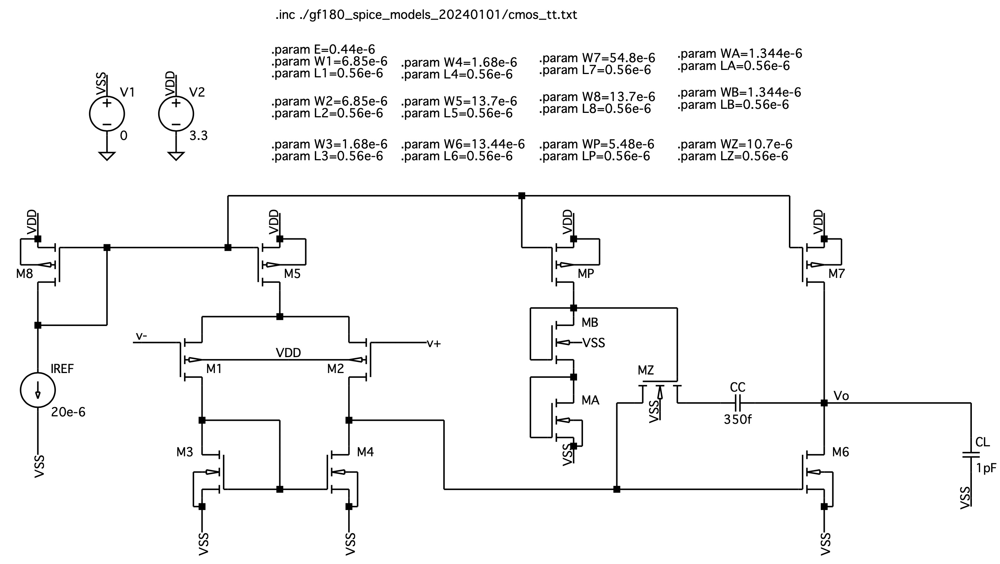
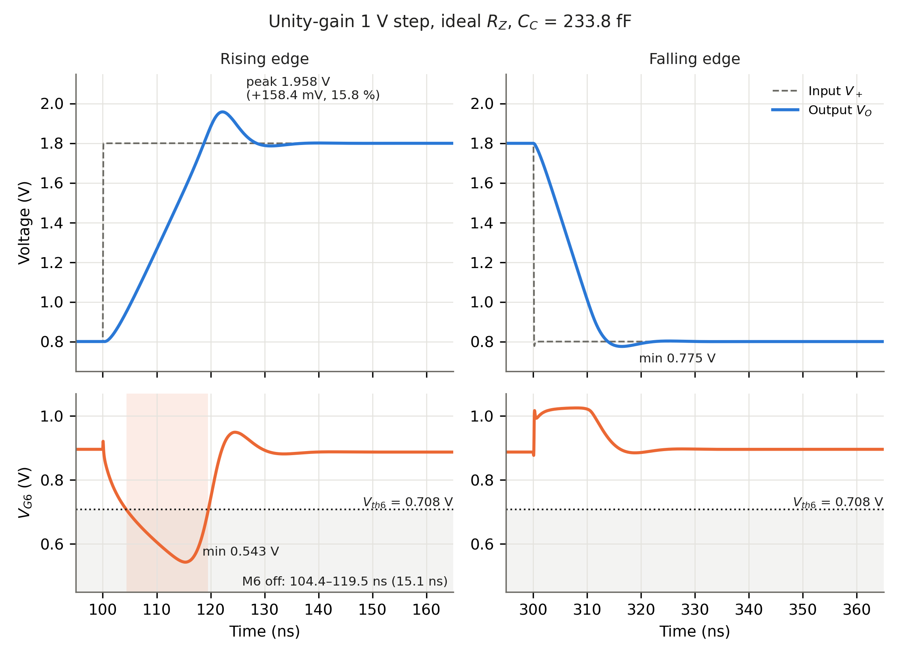
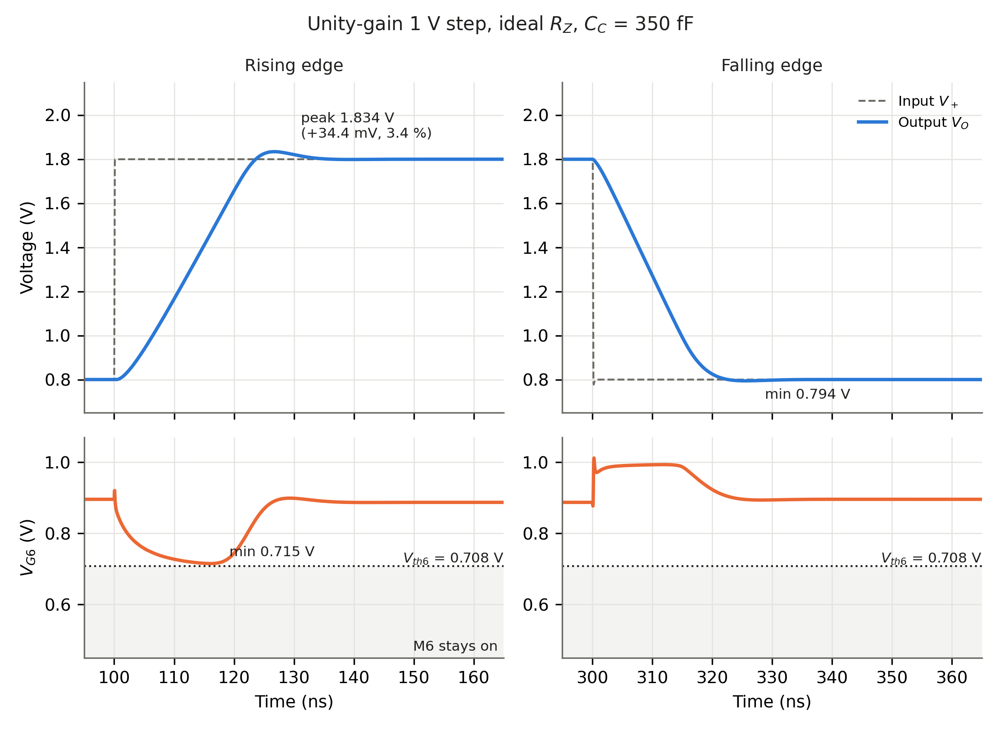
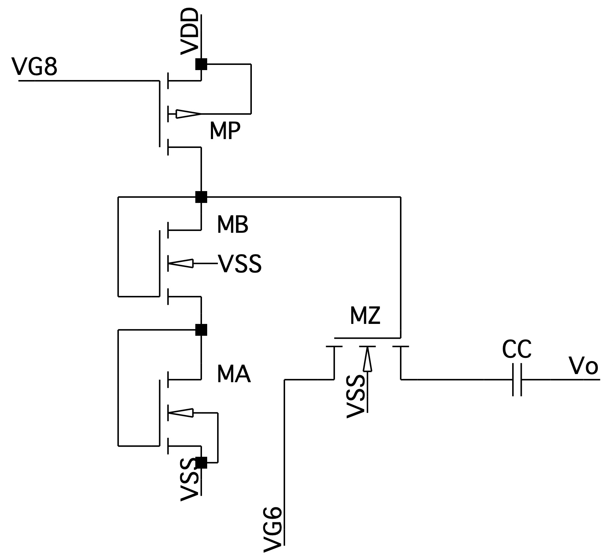
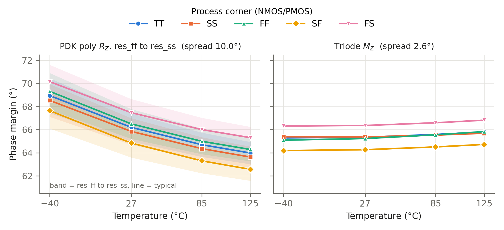
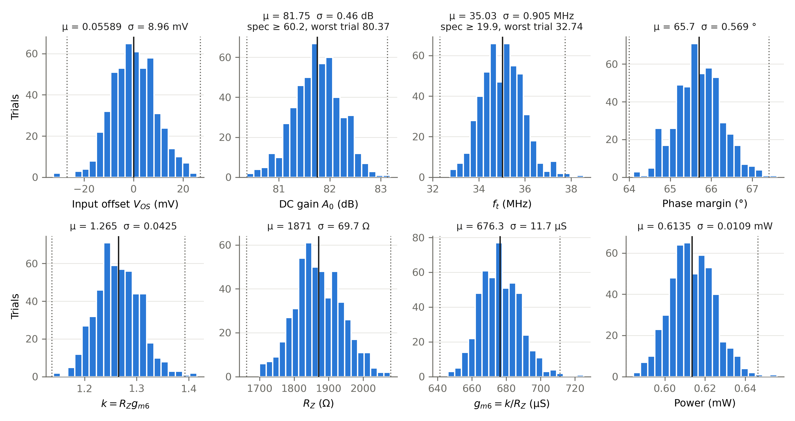

Two-stage Miller-compensated op-amp
A PMOS-input two-stage op-amp, compensated twice over: once for small-signal stability, then again when a large step showed the second stage cutting off. The nulling resistor is built two ways, as a poly resistor and as a transistor in triode. The transistor holds its phase margin far better over temperature, but Monte Carlo showed it varying more from chip to chip, until its bias devices were moved into the same model bin as the devices they track.

| Parameter | Ideal resistor (R = 1/gm6) | Triode transistor MZ |
|---|---|---|
| Open-loop DC gain (hand: 81.8 dB) | 81.7 dB | 81.7 dB |
| −3 dB bandwidth | 3.14 kHz | 3.14 kHz |
| Unity-gain frequency, ft | 35.6 MHz | 34.9 MHz |
| Phase margin | 65.9° | 64.9° |
| Gain margin | 27.0 dB | 32.4 dB |
| Slew rate (rise / fall) | 47.5 / 54.8 V/µs | 46.5 / 54.4 V/µs |
| Large-step overshoot | 3.44% | 5.05% |
| Rise / fall time, 10–90% | 16.8 / 14.6 ns | 17.2 / 14.7 ns |
| CMRR at low frequency (matched devices) | — | 83.1 dB |
| Power | 0.400 mW | 0.427 mW |
Design notes
Sizing
Every device runs at VOV = 0.2 V with L = 0.56 µm. I measured ID/W for each device type at that overdrive in LTspice, then set widths from branch currents: 10 µA per input device and 82 µA in the second stage. M6 is sized from the systematic-offset condition (W/L)6/(W/L)4 = 2(W/L)7/(W/L)5. By hand, each stage gives about 102 and 120 V/V, for 81.8 dB overall, which matches simulation.
Why it needs compensation
Without compensation the two main poles sit close together, at about 700 kHz (first-stage output) and 850 kHz (output), far below the 201 MHz unity-gain frequency. The first-stage node is heavier than it looks: M6's gate–drain capacitance is Miller-multiplied by the second-stage gain, which takes C1 from about 7 fF to 193 fF. Two poles alone would leave about 0° of margin; simulation gives −8.2°, so higher-frequency poles such as the mirror node add the rest. Either way it is unstable as a unity-gain buffer. Miller capacitance CC splits the poles, but adds a right-half-plane zero at gm6/CC. A resistor of 1/gm6 = 1479 Ω in series with CC pushes that zero to infinity, leaving PM = 90° − tan−1(ft/fp2). Targeting 60° gives CC = 233.8 fF, and simulation returns 56.9°.
The large step that changed CC
That design overshot a large step by 15.8%. During slewing, the first stage pulled M6's gate below threshold and switched it off. The output stage can only keep up if I7 ≥ I(1 + C2/CC). With I7 fixed at 81.9 µA, that means CC ≥ 330 fF, which is the same as asking for a phase margin of at least 67.7°. I raised CC to 350 fF. Overshoot fell to 3.4% and M6's gate stayed above 0.715 V, at the cost of ft dropping from 49.6 to 35.6 MHz.
A resistor that tracks gm6
A fixed resistor only cancels the zero at one value of gm6, and gm6 drifts with process and temperature. Instead I biased an NMOS MZ in triode at the same overdrive as M6, so RZgm6 depends only on the width ratio. A diode stack at M6's current density sets MZ's gate, so VOV,Z follows VOV6. I sized for RZgm6 = 1.2, a little above 1, which moves the zero into the left half-plane to add phase. The first sizing gave 1.144, and resizing WZ from 11.2 to 10.7 µm landed exactly on 1.20.



Across process and temperature
I ran TT, SS, FF, SF and FS at −40, 27, 85 and 125 °C in ngspice. For a fair comparison, the resistor design uses the PDK's own poly resistor (ppolyf_u_1k) with its ±20% sheet-resistance corners and temperature coefficient, not an ideal resistor.
The two elements drift in opposite directions. The poly resistance falls with temperature while gm6 also falls, so k = RZgm6 drops from about 1.3 to 0.75 at TT. As k passes through 1 the zero moves from the left half-plane, through infinity, into the right half-plane, and the phase margin falls about 5°. MZ's on-resistance depends on the same electron mobility as gm6, so it rises as gm6 falls: k stays above 1 (1.08 to 1.35) and the phase margin moves less than 0.8° over temperature at any corner. What spread remains is between the skewed corners, where the PMOS input pair and the NMOS output device move in opposite directions and MZ tracks only the NMOS side.
| Measurement | PDK poly resistor, res_ff to res_ss | Triode transistor MZ |
|---|---|---|
| Phase margin spread within a corner | 7.2–7.6° | 0.3–0.7° |
| Phase margin, total spread | 10.0° | 2.6° |
| Phase margin range | 61.6 to 71.6° | 64.2 to 66.8° |
| Gain margin range | 20.3 to 39.5 dB | 29.7 to 37.2 dB |
| Unity-gain frequency range | 28.4 to 44.1 MHz | 27.8 to 43.0 MHz |

Monte Carlo: the opposite result
Corners move every NMOS together and every PMOS together, so they can't show mismatch. I ran 500-trial Monte Carlo in ngspice with the PDK's statistical models, separating global process variation from device-to-device mismatch. The result reversed the corner picture: from chip to chip, MZ's phase margin varied three times as much as the poly resistor's (σ = 1.81° against 0.58°), with k ranging from 0.83 to 2.77.
A triode resistor is very sensitive to its overdrive: at VOV,Z ≈ 0.2 V, each millivolt of error moves RZ by 0.5%. The bias stack is meant to cancel shared threshold shifts, but its devices (1.3 and 5.5 µm wide) fall in a narrower model bin than M6 and MZ (over 10 µm), and the PDK gives that bin its own, larger global threshold variation. So a process shift moves the bias devices differently from the devices they track. Widening MA, MB and MP by 8× puts them in the same bin: σk drops from 0.248 to 0.043 and the phase-margin σ to 0.57°, matching the poly resistor, for 187 µW of extra bias power. A global-only run confirms the cause: there, σk falls from 0.238 to 0.006.
Input offset is the same for both designs, about 9 mV (1σ), because neither nulling element carries DC current; it is set by first-stage mismatch.
| Measurement (μ ± σ) | PDK poly resistor | MZ, original bias | MZ, 8× bias devices |
|---|---|---|---|
| Phase margin | 66.17 ± 0.58° | 65.72 ± 1.81° | 65.70 ± 0.57° |
| Phase margin range | 64.6 to 67.8° | 62.1 to 75.2° | 64.1 to 67.6° |
| k = RZgm6 | 0.998 ± 0.050 | 1.250 ± 0.248 | 1.265 ± 0.043 |
| Input offset, σ | 8.74 mV | 8.96 mV | — |
| Power (mean) | 0.400 mW | 0.427 mW | +0.187 mW |

| Device | Role | W (µm) | ID (µA) | |VGS| (V) | |VDS| (V) | |Vth| (V) | Vdsat (V) | gm (µS) | gds (µS) |
|---|---|---|---|---|---|---|---|---|---|
| M1, M2 | PMOS input pair | 6.85 | 9.73 | 1.17 | 1.93 | 0.983 | 0.202 | 86.5 | 0.274 |
| M3, M4 | NMOS mirror load | 1.68 | 9.73 | 0.889 | 0.889 | 0.699 | 0.209 | 79.8 | 0.572 |
| M5 | PMOS tail source | 13.7 | 19.5 | 0.98 | 0.483 | 0.79 | 0.193 | 170 | 1.50 |
| M6 | NMOS second stage | 13.44 | 81.9 | 0.889 | 1.62 | 0.708 | 0.203 | 676 | 3.23 |
| M7 | PMOS second-stage load | 54.8 | 81.9 | 0.98 | 1.68 | 0.79 | 0.194 | 712 | 2.38 |
| M8 | Diode-connected reference | 13.7 | 20.0 | 0.98 | 0.98 | 0.79 | 0.193 | 174 | 0.847 |
Next: layout of the first stage (M1–M4) in Magic, with DRC, LVS and post-layout simulation.